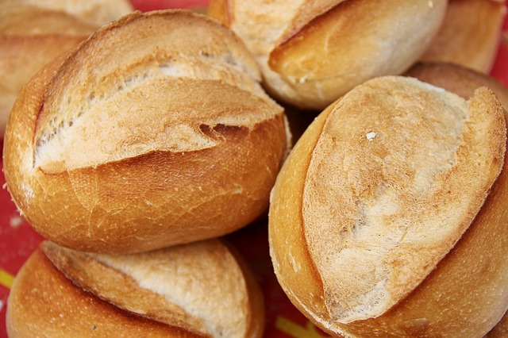

How To
Bread
White Bread

Ingredients
- 11 cups flour
- 2 Teaspoons yeast
- 6 Teaspoons sugar
- 6 Teaspoons oil
- 4 Teaspoons salt
- 1 cup milk
- 3 cups hot water from kettle
- Equipment:kettle, large mixing bowl, large mixing spoon (wooden), 4 cup glass measuring cup, plastic wrap, dish towel, baking sheet
Steps
- Put water in a kettle and turn on to heat up.
- Put 4 cups of flour and all other dry ingredients into very large bowl and stir to combine.
- Pour oil and milk into large glass measuring cup. If you don't have a large measuring cup, combine ingredients in a pot.
- Start adding the 3 cups of hot water. When you only have about half a cup left, feel the water and keep stirring and feeling the mixed liquids as you add the water. If it's too hot, add a little cold water. If it's to cold, add more of the hot water. It should be hot enough that you feel a reaction to sticking in your finger, but not enough that you want to pull your finger out.
- Mix the liquids into the flour with a large spoon. I use a wooden spoon.
- Pour remaning flour into the bowl, stirring as you go along. When it's too hard to stir,add flour onto your spoon and scrape it clean. Start kneading
- Stop adding flour or add more flour to get a consistency where it's no longer sticking to your fingers.
- Knead about ten minutes. You can't overknead when you are doing it by hand. You lift the bread onto it's end, press down, turn the bowl, and repeat.
- Stop when it's satiny and it springs back right away when you press on it.
- Pour oil around edge of the bowl. Spin the dough around in the oil to cover the dough and the bowl with the oil.
- Cover the bowl with plastic wrap and then a towel.
- If you are in a hurry, put it in a warm place.
- After it has doubled in size, punch it down and form it how you'd like to cook it: loaf, bread sticks, rolls, etc.
- Let it rise another 40 minutes before baking at 400 degree in the oven for 20 minutes.
- Take it out and get it out of the pan onto a cooling rack. Finished bread sounds hollow when you knock on the bottom.
Notes:You can let it rise for a long time if you want, when it grows too big for the bowl, just punch it down and let it rise again. You can even put it in the fridge and let it rise overnight. After you form the shape you are going to need to cook it in, you can freeze it. Take it out in the morining to have it for dinner, or before you go to bed to have it for breakfast. Just leave it out on the counter to defrost and rise.